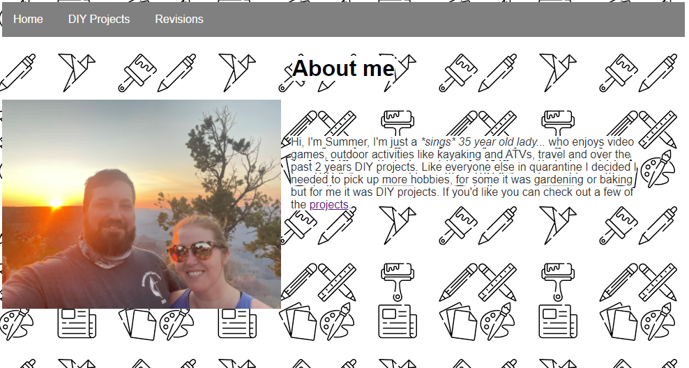

Revisions
After requesting some feedback on my site from some co-workers and family these are the revisions that I made based on that feedback.
-

The first revisions I made were to the homepage, a co-worker made note that the main header looked bulky and the background color of the "about me" and paragraphs of the home page took up the span of the page. So I made the header more compact and adjusted the background color to only display behind the words and not across the entire page.
 -
The next revision I made was...